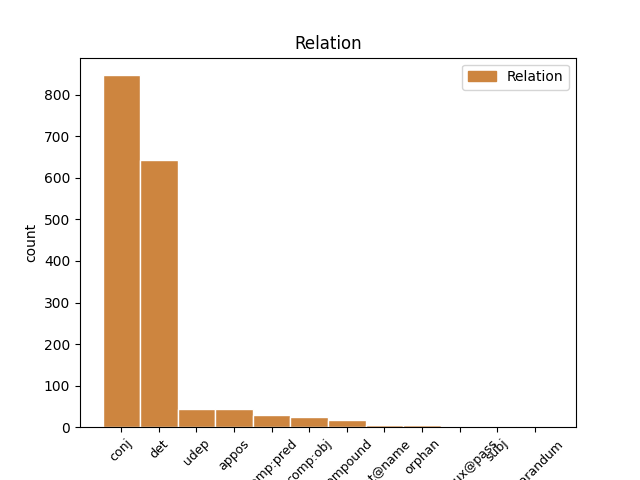
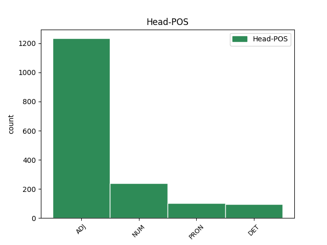
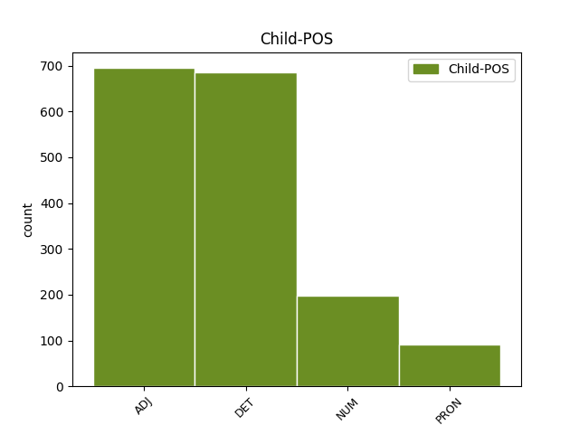

Distribution of features within this leaf



Agreement Rules sorted by frequency.
- When the dependent token is the conjunct(conj) of the head token, and the head token is ADJ and the dependent token is ADJ.
1 Det _ _ _ _ 0 _ _ _
2 blei _ _ _ _ 0 _ _ _
3 frykteleg _ _ _ _ 0 _ _ _
4 oppgått oppgå ADJ _ Definite=Ind|Gender=Neut|Number=Sing|VerbForm=Part 0 _ _ _
5 og _ _ _ _ 0 _ _ _
6 sørpete sørpete ADJ _ Definite=Ind|Degree=Pos|Gender=Neut|Number=Sing 4 conj _ _
7 etter _ _ _ _ 0 _ _ _
8 kvart _ _ _ _ 0 _ _ _
9 . _ _ _ _ 0 _ _ _
1 Folk _ _ _ _ 0 _ _ _
2 ynskjer _ _ _ _ 0 _ _ _
3 noko nokon DET _ Gender=Neut|Number=Sing|PronType=Ind 4 det _ _
4 ekte ekte ADJ _ Definite=Ind|Degree=Pos|Gender=Neut|Number=Sing 0 _ _ _
5 og _ _ _ _ 0 _ _ _
6 nært _ _ _ _ 0 _ _ _
7 , _ _ _ _ 0 _ _ _
8 noko _ _ _ _ 0 _ _ _
9 som _ _ _ _ 0 _ _ _
10 har _ _ _ _ 0 _ _ _
11 med _ _ _ _ 0 _ _ _
12 samhald _ _ _ _ 0 _ _ _
13 å _ _ _ _ 0 _ _ _
14 gjera _ _ _ _ 0 _ _ _
15 , _ _ _ _ 0 _ _ _
16 avslutta _ _ _ _ 0 _ _ _
17 Enger _ _ _ _ 0 _ _ _
18 Lahnstein _ _ _ _ 0 _ _ _
19 . _ _ _ _ 0 _ _ _
1 Han _ _ _ _ 0 _ _ _
2 vann _ _ _ _ 0 _ _ _
3 Hovedlandsrennet _ _ _ _ 0 _ _ _
4 ( _ _ _ _ 0 _ _ _
5 NM _ _ _ _ 0 _ _ _
6 for _ _ _ _ 0 _ _ _
7 15 15 NUM _ Number=Plur|NumType=Card 0 _ _ _
8 - _ _ _ _ 0 _ _ _
9 16 16 NUM _ Number=Plur|NumType=Card 7 conj _ _
10 år _ _ _ _ 0 _ _ _
11 ) _ _ _ _ 0 _ _ _
12 i _ _ _ _ 0 _ _ _
13 fjor _ _ _ _ 0 _ _ _
14 , _ _ _ _ 0 _ _ _
15 medan _ _ _ _ 0 _ _ _
16 det _ _ _ _ 0 _ _ _
17 blei _ _ _ _ 0 _ _ _
18 sølv _ _ _ _ 0 _ _ _
19 i _ _ _ _ 0 _ _ _
20 den _ _ _ _ 0 _ _ _
21 første _ _ _ _ 0 _ _ _
22 noregscupen _ _ _ _ 0 _ _ _
23 . _ _ _ _ 0 _ _ _
1 Torleiv _ _ _ _ 0 _ _ _
2 Hvistendahl _ _ _ _ 0 _ _ _
3 , _ _ _ _ 0 _ _ _
4 den den DET _ Gender=Masc|Number=Sing|PronType=Dem 5 det _ _
5 andre annan DET _ Definite=Def|Number=Sing|PronType=Dem 0 _ _ _
6 i _ _ _ _ 0 _ _ _
7 trenarduoen _ _ _ _ 0 _ _ _
8 til _ _ _ _ 0 _ _ _
9 Fyresdal _ _ _ _ 0 _ _ _
10 , _ _ _ _ 0 _ _ _
11 hadde _ _ _ _ 0 _ _ _
12 ikkje _ _ _ _ 0 _ _ _
13 høve _ _ _ _ 0 _ _ _
14 til _ _ _ _ 0 _ _ _
15 å _ _ _ _ 0 _ _ _
16 vere _ _ _ _ 0 _ _ _
17 med _ _ _ _ 0 _ _ _
18 på _ _ _ _ 0 _ _ _
19 kampen _ _ _ _ 0 _ _ _
20 mot _ _ _ _ 0 _ _ _
21 Kjapp _ _ _ _ 0 _ _ _
22 . _ _ _ _ 0 _ _ _
1 Men _ _ _ _ 0 _ _ _
2 me me PRON _ Animacy=Hum|Case=Nom|Number=Plur|Person=1|PronType=Prs 0 _ _ _
3 andre annan DET _ Number=Plur|PronType=Dem 2 det _ _
4 blir _ _ _ _ 0 _ _ _
5 òg _ _ _ _ 0 _ _ _
6 flinkare _ _ _ _ 0 _ _ _
7 etter _ _ _ _ 0 _ _ _
8 kvart _ _ _ _ 0 _ _ _
9 . _ _ _ _ 0 _ _ _
1 Den den DET _ Gender=Masc|Number=Sing|PronType=Dem 2 det _ _
2 eine eine NUM _ Definite=Def|Number=Sing|NumType=Card 0 _ _ _
3 hadde _ _ _ _ 0 _ _ _
4 sett _ _ _ _ 0 _ _ _
5 fast _ _ _ _ 0 _ _ _
6 geviret _ _ _ _ 0 _ _ _
7 i _ _ _ _ 0 _ _ _
8 trådane _ _ _ _ 0 _ _ _
9 og _ _ _ _ 0 _ _ _
10 måtte _ _ _ _ 0 _ _ _
11 avlivast _ _ _ _ 0 _ _ _
12 . _ _ _ _ 0 _ _ _
1 Ragnvald _ _ _ _ 0 _ _ _
2 Skrede _ _ _ _ 0 _ _ _
3 blei _ _ _ _ 0 _ _ _
4 ønskt ønskje ADJ _ Definite=Ind|Number=Sing|VerbForm=Part 0 _ _ _
5 velkomen velkomen ADJ _ Definite=Ind|Degree=Pos|Gender=Masc|Number=Sing 4 comp:pred _ _
6 til _ _ _ _ 0 _ _ _
7 Rauland _ _ _ _ 0 _ _ _
8 , _ _ _ _ 0 _ _ _
9 også _ _ _ _ 0 _ _ _
10 etter _ _ _ _ 0 _ _ _
11 at _ _ _ _ 0 _ _ _
12 han _ _ _ _ 0 _ _ _
13 i _ _ _ _ 0 _ _ _
14 lagmannsretten _ _ _ _ 0 _ _ _
15 på _ _ _ _ 0 _ _ _
16 Gjøvik _ _ _ _ 0 _ _ _
17 i _ _ _ _ 0 _ _ _
18 1936 _ _ _ _ 0 _ _ _
19 blei _ _ _ _ 0 _ _ _
20 dømt _ _ _ _ 0 _ _ _
21 for _ _ _ _ 0 _ _ _
22 seksuelt _ _ _ _ 0 _ _ _
23 misbruk _ _ _ _ 0 _ _ _
24 av _ _ _ _ 0 _ _ _
25 elevar _ _ _ _ 0 _ _ _
26 på _ _ _ _ 0 _ _ _
27 Vågåmo _ _ _ _ 0 _ _ _
28 skule _ _ _ _ 0 _ _ _
29 . _ _ _ _ 0 _ _ _
1 På _ _ _ _ 0 _ _ _
2 ein ein DET _ Gender=Masc|Number=Sing|PronType=Art 0 _ _ _
3 eller _ _ _ _ 0 _ _ _
4 annan annan DET _ Definite=Ind|Gender=Masc|Number=Sing|PronType=Dem 2 conj _ _
5 måte _ _ _ _ 0 _ _ _
6 har _ _ _ _ 0 _ _ _
7 alle _ _ _ _ 0 _ _ _
8 i _ _ _ _ 0 _ _ _
9 bygda _ _ _ _ 0 _ _ _
10 vore _ _ _ _ 0 _ _ _
11 med _ _ _ _ 0 _ _ _
12 å _ _ _ _ 0 _ _ _
13 ytt _ _ _ _ 0 _ _ _
14 sitt _ _ _ _ 0 _ _ _
15 også _ _ _ _ 0 _ _ _
16 denne _ _ _ _ 0 _ _ _
17 venda _ _ _ _ 0 _ _ _
18 . _ _ _ _ 0 _ _ _
1 - _ _ _ _ 0 _ _ _
2 Eg eg PRON _ Animacy=Hum|Case=Nom|Number=Sing|Person=1|PronType=Prs 0 _ _ _
3 har _ _ _ _ 0 _ _ _
4 rive _ _ _ _ 0 _ _ _
5 hol _ _ _ _ 0 _ _ _
6 i _ _ _ _ 0 _ _ _
7 mange _ _ _ _ 0 _ _ _
8 gummistøvlar _ _ _ _ 0 _ _ _
9 , _ _ _ _ 0 _ _ _
10 eg eg PRON _ Animacy=Hum|Case=Nom|Number=Sing|Person=1|PronType=Prs 2 appos _ SpaceAfter=No
11 , _ _ _ _ 0 _ _ _
12 når _ _ _ _ 0 _ _ _
13 eg _ _ _ _ 0 _ _ _
14 har _ _ _ _ 0 _ _ _
15 snubla _ _ _ _ 0 _ _ _
16 i _ _ _ _ 0 _ _ _
17 piggtråd _ _ _ _ 0 _ _ _
18 , _ _ _ _ 0 _ _ _
19 held _ _ _ _ 0 _ _ _
20 han _ _ _ _ 0 _ _ _
21 fram _ _ _ _ 0 _ _ _
22 . _ _ _ _ 0 _ _ _
1 Etter _ _ _ _ 0 _ _ _
2 at _ _ _ _ 0 _ _ _
3 Regjeringa _ _ _ _ 0 _ _ _
4 overtok _ _ _ _ 0 _ _ _
5 , _ _ _ _ 0 _ _ _
6 har _ _ _ _ 0 _ _ _
7 så _ _ _ _ 0 _ _ _
8 mange _ _ _ _ 0 _ _ _
9 som _ _ _ _ 0 _ _ _
10 200 200 NUM _ Number=Plur|NumType=Card 11 compound _ _
11 000 000 NUM _ Number=Plur|NumType=Card 0 _ _ _
12 fleire _ _ _ _ 0 _ _ _
13 kome _ _ _ _ 0 _ _ _
14 ut _ _ _ _ 0 _ _ _
15 i _ _ _ _ 0 _ _ _
16 arbeid _ _ _ _ 0 _ _ _
17 . _ _ _ _ 0 _ _ _
1 I _ _ _ _ 0 _ _ _
2 tråd _ _ _ _ 0 _ _ _
3 med _ _ _ _ 0 _ _ _
4 føresetnaden _ _ _ _ 0 _ _ _
5 i _ _ _ _ 0 _ _ _
6 målbruksmeldinga _ _ _ _ 0 _ _ _
7 , _ _ _ _ 0 _ _ _
8 St.meld. _ _ _ _ 0 _ _ _
9 nr. _ _ _ _ 0 _ _ _
10 7 7 NUM _ Number=Plur|NumType=Card 0 _ _ _
11 ( _ _ _ _ 0 _ _ _
12 2005 2005 NUM _ Number=Plur|NumType=Card 10 udep _ SpaceAfter=No
13 - _ _ _ _ 0 _ _ _
14 2006 _ _ _ _ 0 _ _ _
15 ) _ _ _ _ 0 _ _ _
16 , _ _ _ _ 0 _ _ _
17 sende _ _ _ _ 0 _ _ _
18 departementet _ _ _ _ 0 _ _ _
19 17. _ _ _ _ 0 _ _ _
20 mars _ _ _ _ 0 _ _ _
21 2006 _ _ _ _ 0 _ _ _
22 eit _ _ _ _ 0 _ _ _
23 rundskriv _ _ _ _ 0 _ _ _
24 til _ _ _ _ 0 _ _ _
25 alle _ _ _ _ 0 _ _ _
26 statlege _ _ _ _ 0 _ _ _
27 organ _ _ _ _ 0 _ _ _
28 om _ _ _ _ 0 _ _ _
29 dette _ _ _ _ 0 _ _ _
30 . _ _ _ _ 0 _ _ _
1 - _ _ _ _ 0 _ _ _
2 Når _ _ _ _ 0 _ _ _
3 det _ _ _ _ 0 _ _ _
4 kjem _ _ _ _ 0 _ _ _
5 nye _ _ _ _ 0 _ _ _
6 menneske _ _ _ _ 0 _ _ _
7 til _ _ _ _ 0 _ _ _
8 ein _ _ _ _ 0 _ _ _
9 liten _ _ _ _ 0 _ _ _
10 stad _ _ _ _ 0 _ _ _
11 vil _ _ _ _ 0 _ _ _
12 det _ _ _ _ 0 _ _ _
13 nødvendigvis _ _ _ _ 0 _ _ _
14 bli _ _ _ _ 0 _ _ _
15 meir _ _ _ _ 0 _ _ _
16 av _ _ _ _ 0 _ _ _
17 alt _ _ _ _ 0 _ _ _
18 - _ _ _ _ 0 _ _ _
19 både _ _ _ _ 0 _ _ _
20 av _ _ _ _ 0 _ _ _
21 det det PRON _ Gender=Neut|Number=Sing|Person=3|PronType=Prs 0 _ _ _
22 som _ _ _ _ 0 _ _ _
23 er _ _ _ _ 0 _ _ _
24 negativt _ _ _ _ 0 _ _ _
25 og _ _ _ _ 0 _ _ _
26 det det PRON _ Gender=Neut|Number=Sing|Person=3|PronType=Prs 21 conj _ _
27 som _ _ _ _ 0 _ _ _
28 er _ _ _ _ 0 _ _ _
29 positivt _ _ _ _ 0 _ _ _
30 . _ _ _ _ 0 _ _ _
1 Folk _ _ _ _ 0 _ _ _
2 ynskjer _ _ _ _ 0 _ _ _
3 noko _ _ _ _ 0 _ _ _
4 ekte _ _ _ _ 0 _ _ _
5 og _ _ _ _ 0 _ _ _
6 nært nær ADJ _ Definite=Ind|Degree=Pos|Gender=Neut|Number=Sing 0 _ _ _
7 , _ _ _ _ 0 _ _ _
8 noko noko PRON _ Gender=Neut|Number=Sing|Person=3|PronType=Ind,Prs 6 appos _ _
9 som _ _ _ _ 0 _ _ _
10 har _ _ _ _ 0 _ _ _
11 med _ _ _ _ 0 _ _ _
12 samhald _ _ _ _ 0 _ _ _
13 å _ _ _ _ 0 _ _ _
14 gjera _ _ _ _ 0 _ _ _
15 , _ _ _ _ 0 _ _ _
16 avslutta _ _ _ _ 0 _ _ _
17 Enger _ _ _ _ 0 _ _ _
18 Lahnstein _ _ _ _ 0 _ _ _
19 . _ _ _ _ 0 _ _ _
1 På _ _ _ _ 0 _ _ _
2 ein _ _ _ _ 0 _ _ _
3 eller _ _ _ _ 0 _ _ _
4 annan _ _ _ _ 0 _ _ _
5 måte _ _ _ _ 0 _ _ _
6 har _ _ _ _ 0 _ _ _
7 alle _ _ _ _ 0 _ _ _
8 i _ _ _ _ 0 _ _ _
9 bygda _ _ _ _ 0 _ _ _
10 vore _ _ _ _ 0 _ _ _
11 med _ _ _ _ 0 _ _ _
12 å _ _ _ _ 0 _ _ _
13 ytt yte ADJ _ Definite=Ind|Gender=Neut|Number=Sing|VerbForm=Part 0 _ _ _
14 sitt sin PRON _ Gender=Neut|Number=Sing|Poss=Yes|PronType=Prs 13 comp:obj _ _
15 også _ _ _ _ 0 _ _ _
16 denne _ _ _ _ 0 _ _ _
17 venda _ _ _ _ 0 _ _ _
18 . _ _ _ _ 0 _ _ _
1 Jamvel _ _ _ _ 0 _ _ _
2 om _ _ _ _ 0 _ _ _
3 hovudansvaret _ _ _ _ 0 _ _ _
4 for _ _ _ _ 0 _ _ _
5 språkpolitikken _ _ _ _ 0 _ _ _
6 i _ _ _ _ 0 _ _ _
7 prinsippet _ _ _ _ 0 _ _ _
8 har _ _ _ _ 0 _ _ _
9 lege _ _ _ _ 0 _ _ _
10 i _ _ _ _ 0 _ _ _
11 Kultur- _ _ _ _ 0 _ _ _
12 og _ _ _ _ 0 _ _ _
13 kyrkjedepartementet _ _ _ _ 0 _ _ _
14 også _ _ _ _ 0 _ _ _
15 til _ _ _ _ 0 _ _ _
16 no _ _ _ _ 0 _ _ _
17 , _ _ _ _ 0 _ _ _
18 kan _ _ _ _ 0 _ _ _
19 det _ _ _ _ 0 _ _ _
20 hevdast _ _ _ _ 0 _ _ _
21 å _ _ _ _ 0 _ _ _
22 ha _ _ _ _ 0 _ _ _
23 vore _ _ _ _ 0 _ _ _
24 noko noko PRON _ Gender=Neut|Number=Sing|Person=3|PronType=Ind,Prs 25 udep _ _
25 uklart uklar ADJ _ Definite=Ind|Degree=Pos|Gender=Neut|Number=Sing 0 _ _ _
26 kor _ _ _ _ 0 _ _ _
27 langt _ _ _ _ 0 _ _ _
28 dette _ _ _ _ 0 _ _ _
29 ansvaret _ _ _ _ 0 _ _ _
30 har _ _ _ _ 0 _ _ _
31 nådd _ _ _ _ 0 _ _ _
32 , _ _ _ _ 0 _ _ _
33 og _ _ _ _ 0 _ _ _
34 kor _ _ _ _ 0 _ _ _
35 aktivt _ _ _ _ 0 _ _ _
36 det _ _ _ _ 0 _ _ _
37 i _ _ _ _ 0 _ _ _
38 praksis _ _ _ _ 0 _ _ _
39 har _ _ _ _ 0 _ _ _
40 vore _ _ _ _ 0 _ _ _
41 følgt _ _ _ _ 0 _ _ _
42 opp _ _ _ _ 0 _ _ _
43 . _ _ _ _ 0 _ _ _
1 Barn _ _ _ _ 0 _ _ _
2 og _ _ _ _ 0 _ _ _
3 unge ung ADJ _ Degree=Pos|Number=Plur 0 _ _ _
4 i _ _ _ _ 0 _ _ _
5 alle _ _ _ _ 0 _ _ _
6 aldrar _ _ _ _ 0 _ _ _
7 ( _ _ _ _ 0 _ _ _
8 Også _ _ _ _ 0 _ _ _
9 vaksne vaksen ADJ _ Degree=Pos|Number=Plur 3 appos _ SpaceAfter=No
10 ) _ _ _ _ 0 _ _ _
11 får _ _ _ _ 0 _ _ _
12 prøve _ _ _ _ 0 _ _ _
13 seg _ _ _ _ 0 _ _ _
14 på _ _ _ _ 0 _ _ _
15 ferdigheiter _ _ _ _ 0 _ _ _
16 som _ _ _ _ 0 _ _ _
17 triksing _ _ _ _ 0 _ _ _
18 , _ _ _ _ 0 _ _ _
19 presisjonsskyting _ _ _ _ 0 _ _ _
20 , _ _ _ _ 0 _ _ _
21 skotstyrke _ _ _ _ 0 _ _ _
22 med _ _ _ _ 0 _ _ _
23 meir _ _ _ _ 0 _ _ _
24 . _ _ _ _ 0 _ _ _
1 Målt _ _ _ _ 0 _ _ _
2 mot _ _ _ _ 0 _ _ _
3 ambisjonane _ _ _ _ 0 _ _ _
4 som _ _ _ _ 0 _ _ _
5 norske norsk ADJ _ Degree=Pos|Number=Plur 0 _ _ _
6 og _ _ _ _ 0 _ _ _
7 andre annan DET _ Number=Plur|PronType=Dem 5 conj _ _
8 aktivistar _ _ _ _ 0 _ _ _
9 hadde _ _ _ _ 0 _ _ _
10 under _ _ _ _ 0 _ _ _
11 førebuingane _ _ _ _ 0 _ _ _
12 , _ _ _ _ 0 _ _ _
13 kan _ _ _ _ 0 _ _ _
14 dette _ _ _ _ 0 _ _ _
15 kallast _ _ _ _ 0 _ _ _
16 ei _ _ _ _ 0 _ _ _
17 fattig _ _ _ _ 0 _ _ _
18 trøyst _ _ _ _ 0 _ _ _
19 . _ _ _ _ 0 _ _ _
1 I _ _ _ _ 0 _ _ _
2 motsetnad _ _ _ _ 0 _ _ _
3 til _ _ _ _ 0 _ _ _
4 den _ _ _ _ 0 _ _ _
5 førre _ _ _ _ 0 _ _ _
6 regjeringa _ _ _ _ 0 _ _ _
7 sin _ _ _ _ 0 _ _ _
8 næringsnøytralitet _ _ _ _ 0 _ _ _
9 vert _ _ _ _ 0 _ _ _
10 det _ _ _ _ 0 _ _ _
11 no _ _ _ _ 0 _ _ _
12 satsa satse ADJ _ Definite=Ind|Gender=Neut|Number=Sing|VerbForm=Part 0 _ _ _
13 spesielt _ _ _ _ 0 _ _ _
14 mykje mykje ADJ _ Definite=Ind|Degree=Pos|Gender=Neut|Number=Sing 12 comp:obj _ _
15 innan _ _ _ _ 0 _ _ _
16 dei _ _ _ _ 0 _ _ _
17 næringsområda _ _ _ _ 0 _ _ _
18 der _ _ _ _ 0 _ _ _
19 me _ _ _ _ 0 _ _ _
20 har _ _ _ _ 0 _ _ _
21 kompetanse _ _ _ _ 0 _ _ _
22 eller _ _ _ _ 0 _ _ _
23 særlege _ _ _ _ 0 _ _ _
24 fortrinn _ _ _ _ 0 _ _ _
25 . _ _ _ _ 0 _ _ _
1 Dette _ _ _ _ 0 _ _ _
2 er _ _ _ _ 0 _ _ _
3 blitt bli ADJ _ Definite=Ind|Gender=Neut|Number=Sing|VerbForm=Part 0 _ _ _
4 nyansert nyansere ADJ _ Definite=Ind|Gender=Neut|Number=Sing|VerbForm=Part 3 comp:aux@pass _ _
5 ved _ _ _ _ 0 _ _ _
6 at _ _ _ _ 0 _ _ _
7 ein _ _ _ _ 0 _ _ _
8 har _ _ _ _ 0 _ _ _
9 byrja _ _ _ _ 0 _ _ _
10 å _ _ _ _ 0 _ _ _
11 bruke _ _ _ _ 0 _ _ _
12 andre _ _ _ _ 0 _ _ _
13 kjelder _ _ _ _ 0 _ _ _
14 . _ _ _ _ 0 _ _ _
1 Styreleiaren _ _ _ _ 0 _ _ _
2 karakteriserer _ _ _ _ 0 _ _ _
3 situasjonen _ _ _ _ 0 _ _ _
4 som _ _ _ _ 0 _ _ _
5 alvorleg _ _ _ _ 0 _ _ _
6 for _ _ _ _ 0 _ _ _
7 Sogelandet _ _ _ _ 0 _ _ _
8 etter _ _ _ _ 0 _ _ _
9 at _ _ _ _ 0 _ _ _
10 det _ _ _ _ 0 _ _ _
11 no _ _ _ _ 0 _ _ _
12 er _ _ _ _ 0 _ _ _
13 kjent _ _ _ _ 0 _ _ _
14 at _ _ _ _ 0 _ _ _
15 fleire _ _ _ _ 0 _ _ _
16 av _ _ _ _ 0 _ _ _
17 tilskipingane _ _ _ _ 0 _ _ _
18 i _ _ _ _ 0 _ _ _
19 år _ _ _ _ 0 _ _ _
20 får _ _ _ _ 0 _ _ _
21 inga ingen DET _ Gender=Fem|Number=Sing|Polarity=Neg|PronType=Neg 0 _ _ _
22 eller _ _ _ _ 0 _ _ _
23 lita liten ADJ _ Definite=Ind|Degree=Pos|Gender=Fem|Number=Sing 21 conj _ _
24 støtte _ _ _ _ 0 _ _ _
25 frå _ _ _ _ 0 _ _ _
26 fylkeskommunen _ _ _ _ 0 _ _ _
27 . _ _ _ _ 0 _ _ _
1 ( _ _ _ _ 0 _ _ _
2 Den _ _ _ _ 0 _ _ _
3 fyrste _ _ _ _ 0 _ _ _
4 utgåva _ _ _ _ 0 _ _ _
5 av _ _ _ _ 0 _ _ _
6 Kristin _ _ _ _ 0 _ _ _
7 Lavransdatter _ _ _ _ 0 _ _ _
8 låg _ _ _ _ 0 _ _ _
9 fyre _ _ _ _ 0 _ _ _
10 i _ _ _ _ 0 _ _ _
11 åri _ _ _ _ 0 _ _ _
12 1920 1920 NUM _ Number=Plur|NumType=Card 0 _ _ _
13 - _ _ _ _ 0 _ _ _
14 23 23 NUM _ Number=Plur|NumType=Card 12 flat@name _ SpaceAfter=No
15 . _ _ _ _ 0 _ _ _
16 ) _ _ _ _ 0 _ _ _
1 Forfattarane _ _ _ _ 0 _ _ _
2 har _ _ _ _ 0 _ _ _
3 gått _ _ _ _ 0 _ _ _
4 til _ _ _ _ 0 _ _ _
5 oppgåva _ _ _ _ 0 _ _ _
6 med _ _ _ _ 0 _ _ _
7 stort _ _ _ _ 0 _ _ _
8 ålvor _ _ _ _ 0 _ _ _
9 , _ _ _ _ 0 _ _ _
10 nokre _ _ _ _ 0 _ _ _
11 engstelege _ _ _ _ 0 _ _ _
12 , _ _ _ _ 0 _ _ _
13 nokre nokre PRON _ Number=Plur|Person=3|PronType=Prs 0 _ _ _
14 meir _ _ _ _ 0 _ _ _
15 overraska overraske ADJ _ Number=Plur|VerbForm=Part 13 orphan _ _
16 enn _ _ _ _ 0 _ _ _
17 andre _ _ _ _ 0 _ _ _
18 , _ _ _ _ 0 _ _ _
19 men _ _ _ _ 0 _ _ _
20 alle _ _ _ _ 0 _ _ _
21 har _ _ _ _ 0 _ _ _
22 funne _ _ _ _ 0 _ _ _
23 stor _ _ _ _ 0 _ _ _
24 glede _ _ _ _ 0 _ _ _
25 i _ _ _ _ 0 _ _ _
26 det _ _ _ _ 0 _ _ _
27 . _ _ _ _ 0 _ _ _
1 Få få ADJ _ Degree=Pos|Number=Plur 0 _ _ _
2 eller _ _ _ _ 0 _ _ _
3 ingen ingen PRON _ Number=Plur|Person=3|Polarity=Neg|PronType=Neg,Prs 1 conj _ _
4 kan _ _ _ _ 0 _ _ _
5 norsk _ _ _ _ 0 _ _ _
6 så _ _ _ _ 0 _ _ _
7 me _ _ _ _ 0 _ _ _
8 må _ _ _ _ 0 _ _ _
9 truleg _ _ _ _ 0 _ _ _
10 få _ _ _ _ 0 _ _ _
11 tak _ _ _ _ 0 _ _ _
12 i _ _ _ _ 0 _ _ _
13 fleire _ _ _ _ 0 _ _ _
14 tolkar _ _ _ _ 0 _ _ _
15 for _ _ _ _ 0 _ _ _
16 å _ _ _ _ 0 _ _ _
17 få _ _ _ _ 0 _ _ _
18 gjennomført _ _ _ _ 0 _ _ _
19 avhøyra _ _ _ _ 0 _ _ _
20 , _ _ _ _ 0 _ _ _
21 opplyser _ _ _ _ 0 _ _ _
22 lensmannen _ _ _ _ 0 _ _ _
23 . _ _ _ _ 0 _ _ _
1 Målet _ _ _ _ 0 _ _ _
2 var _ _ _ _ 0 _ _ _
3 å _ _ _ _ 0 _ _ _
4 fiske _ _ _ _ 0 _ _ _
5 Nessi _ _ _ _ 0 _ _ _
6 , _ _ _ _ 0 _ _ _
7 men _ _ _ _ 0 _ _ _
8 ho _ _ _ _ 0 _ _ _
9 var _ _ _ _ 0 _ _ _
10 ikkje _ _ _ _ 0 _ _ _
11 noko nokon DET _ Gender=Neut|Number=Sing|PronType=Ind 12 udep _ _
12 særleg særleg ADJ _ Definite=Ind|Degree=Pos|Gender=Neut|Number=Sing 0 _ _ _
13 bitevillig _ _ _ _ 0 _ _ _
14 ! _ _ _ _ 0 _ _ _
1 I _ _ _ _ 0 _ _ _
2 dag _ _ _ _ 0 _ _ _
3 må _ _ _ _ 0 _ _ _
4 det _ _ _ _ 0 _ _ _
5 nemleg _ _ _ _ 0 _ _ _
6 leggjast _ _ _ _ 0 _ _ _
7 til _ _ _ _ 0 _ _ _
8 grunn _ _ _ _ 0 _ _ _
9 at _ _ _ _ 0 _ _ _
10 kultur _ _ _ _ 0 _ _ _
11 er _ _ _ _ 0 _ _ _
12 noko _ _ _ _ 0 _ _ _
13 som _ _ _ _ 0 _ _ _
14 oppstår _ _ _ _ 0 _ _ _
15 , _ _ _ _ 0 _ _ _
16 veks _ _ _ _ 0 _ _ _
17 fram _ _ _ _ 0 _ _ _
18 og _ _ _ _ 0 _ _ _
19 blir _ _ _ _ 0 _ _ _
20 endra _ _ _ _ 0 _ _ _
21 i _ _ _ _ 0 _ _ _
22 møte _ _ _ _ 0 _ _ _
23 med _ _ _ _ 0 _ _ _
24 andre _ _ _ _ 0 _ _ _
25 kulturar _ _ _ _ 0 _ _ _
26 , _ _ _ _ 0 _ _ _
27 og _ _ _ _ 0 _ _ _
28 uttrykket _ _ _ _ 0 _ _ _
29 norsk _ _ _ _ 0 _ _ _
30 samanstilt _ _ _ _ 0 _ _ _
31 med _ _ _ _ 0 _ _ _
32 kultur _ _ _ _ 0 _ _ _
33 i _ _ _ _ 0 _ _ _
34 ei _ _ _ _ 0 _ _ _
35 lovføresegn _ _ _ _ 0 _ _ _
36 kan _ _ _ _ 0 _ _ _
37 då _ _ _ _ 0 _ _ _
38 lett _ _ _ _ 0 _ _ _
39 gje _ _ _ _ 0 _ _ _
40 uheldige _ _ _ _ 0 _ _ _
41 førestellingar _ _ _ _ 0 _ _ _
42 om _ _ _ _ 0 _ _ _
43 det det PRON _ Gender=Neut|Number=Sing|Person=3|PronType=Prs 46 det _ _
44 meir _ _ _ _ 0 _ _ _
45 reindyrka _ _ _ _ 0 _ _ _
46 norske norsk ADJ _ Definite=Def|Degree=Pos|Number=Sing 0 _ _ _
47 . _ _ _ _ 0 _ _ _
1 Kommunestryret _ _ _ _ 0 _ _ _
2 var _ _ _ _ 0 _ _ _
3 ikkje _ _ _ _ 0 _ _ _
4 merksam _ _ _ _ 0 _ _ _
5 på _ _ _ _ 0 _ _ _
6 paragraf _ _ _ _ 0 _ _ _
7 34 _ _ _ _ 0 _ _ _
8 i _ _ _ _ 0 _ _ _
9 kommunelova _ _ _ _ 0 _ _ _
10 , _ _ _ _ 0 _ _ _
11 som _ _ _ _ 0 _ _ _
12 krev _ _ _ _ 0 _ _ _
13 to to NUM _ Number=Plur|NumType=Card 14 udep _ _
14 tredels tredels ADJ _ Degree=Pos|Number=Plur 0 _ _ _
15 fleirtal _ _ _ _ 0 _ _ _
16 for _ _ _ _ 0 _ _ _
17 å _ _ _ _ 0 _ _ _
18 fortsettje _ _ _ _ 0 _ _ _
19 handsaming _ _ _ _ 0 _ _ _
20 av _ _ _ _ 0 _ _ _
21 saker _ _ _ _ 0 _ _ _
22 som _ _ _ _ 0 _ _ _
23 ikkje _ _ _ _ 0 _ _ _
24 er _ _ _ _ 0 _ _ _
25 på _ _ _ _ 0 _ _ _
26 sakslista _ _ _ _ 0 _ _ _
27 . _ _ _ _ 0 _ _ _
1 Kapitlet _ _ _ _ 0 _ _ _
2 er _ _ _ _ 0 _ _ _
3 delt _ _ _ _ 0 _ _ _
4 i _ _ _ _ 0 _ _ _
5 fem _ _ _ _ 0 _ _ _
6 hovudbolkar _ _ _ _ 0 _ _ _
7 , _ _ _ _ 0 _ _ _
8 ein _ _ _ _ 0 _ _ _
9 om _ _ _ _ 0 _ _ _
10 mål _ _ _ _ 0 _ _ _
11 og _ _ _ _ 0 _ _ _
12 prinsipp _ _ _ _ 0 _ _ _
13 for _ _ _ _ 0 _ _ _
14 ein _ _ _ _ 0 _ _ _
15 ny _ _ _ _ 0 _ _ _
16 språkpolitikk _ _ _ _ 0 _ _ _
17 ( _ _ _ _ 0 _ _ _
18 kap. _ _ _ _ 0 _ _ _
19 3.1 _ _ _ _ 0 _ _ _
20 ) _ _ _ _ 0 _ _ _
21 , _ _ _ _ 0 _ _ _
22 ein _ _ _ _ 0 _ _ _
23 som _ _ _ _ 0 _ _ _
24 går _ _ _ _ 0 _ _ _
25 nærare _ _ _ _ 0 _ _ _
26 inn _ _ _ _ 0 _ _ _
27 på _ _ _ _ 0 _ _ _
28 prinsippa _ _ _ _ 0 _ _ _
29 i _ _ _ _ 0 _ _ _
30 den _ _ _ _ 0 _ _ _
31 nye _ _ _ _ 0 _ _ _
32 språkpolitikken _ _ _ _ 0 _ _ _
33 ( _ _ _ _ 0 _ _ _
34 kap. _ _ _ _ 0 _ _ _
35 3.2 _ _ _ _ 0 _ _ _
36 ) _ _ _ _ 0 _ _ _
37 , _ _ _ _ 0 _ _ _
38 ein ein DET _ Gender=Masc|Number=Sing|PronType=Art 0 _ _ _
39 som _ _ _ _ 0 _ _ _
40 skisserer _ _ _ _ 0 _ _ _
41 eit _ _ _ _ 0 _ _ _
42 permanent _ _ _ _ 0 _ _ _
43 språkpolitisk _ _ _ _ 0 _ _ _
44 oppfølgingsregime _ _ _ _ 0 _ _ _
45 ( _ _ _ _ 0 _ _ _
46 kap. _ _ _ _ 0 _ _ _
47 3.3 _ _ _ _ 0 _ _ _
48 ) _ _ _ _ 0 _ _ _
49 , _ _ _ _ 0 _ _ _
50 ein ein PRON _ Animacy=Hum|Number=Sing|PronType=Art,Prs 38 conj _ _
51 om _ _ _ _ 0 _ _ _
52 språkpolitisk _ _ _ _ 0 _ _ _
53 lovgjeving _ _ _ _ 0 _ _ _
54 ( _ _ _ _ 0 _ _ _
55 kap. _ _ _ _ 0 _ _ _
56 3.4 _ _ _ _ 0 _ _ _
57 ) _ _ _ _ 0 _ _ _
58 og _ _ _ _ 0 _ _ _
59 ein _ _ _ _ 0 _ _ _
60 del _ _ _ _ 0 _ _ _
61 om _ _ _ _ 0 _ _ _
62 Språkrådet _ _ _ _ 0 _ _ _
63 - _ _ _ _ 0 _ _ _
64 oppgåver _ _ _ _ 0 _ _ _
65 og _ _ _ _ 0 _ _ _
66 organisering _ _ _ _ 0 _ _ _
67 ( _ _ _ _ 0 _ _ _
68 kap. _ _ _ _ 0 _ _ _
69 3.5 _ _ _ _ 0 _ _ _
70 ) _ _ _ _ 0 _ _ _
71 . _ _ _ _ 0 _ _ _
1 Dei dei PRON _ Animacy=Hum|Case=Nom|Number=Plur|Person=3|PronType=Prs 0 _ _ _
2 tenkte _ _ _ _ 0 _ _ _
3 nok _ _ _ _ 0 _ _ _
4 mange _ _ _ _ 0 _ _ _
5 forvirra _ _ _ _ 0 _ _ _
6 tankar _ _ _ _ 0 _ _ _
7 , _ _ _ _ 0 _ _ _
8 dei _ _ _ _ 0 _ _ _
9 ansvarlege ansvarleg ADJ _ Degree=Pos|Number=Plur 1 appos _ _
10 for _ _ _ _ 0 _ _ _
11 overvakinga _ _ _ _ 0 _ _ _
12 , _ _ _ _ 0 _ _ _
13 men _ _ _ _ 0 _ _ _
14 ikkje _ _ _ _ 0 _ _ _
15 at _ _ _ _ 0 _ _ _
16 Albania _ _ _ _ 0 _ _ _
17 eller _ _ _ _ 0 _ _ _
18 Kina _ _ _ _ 0 _ _ _
19 skulle _ _ _ _ 0 _ _ _
20 okkupere _ _ _ _ 0 _ _ _
21 Norge _ _ _ _ 0 _ _ _
22 . _ _ _ _ 0 _ _ _
1 Og _ _ _ _ 0 _ _ _
2 tek _ _ _ _ 0 _ _ _
3 ein _ _ _ _ 0 _ _ _
4 seg _ _ _ _ 0 _ _ _
5 ein ein DET _ Gender=Masc|Number=Sing|PronType=Art 0 _ _ _
6 skarp _ _ _ _ 0 _ _ _
7 ein ein DET _ Gender=Masc|Number=Sing|PronType=Art 5 udep _ SpaceAfter=No
8 , _ _ _ _ 0 _ _ _
9 kan _ _ _ _ 0 _ _ _
10 det _ _ _ _ 0 _ _ _
11 nok _ _ _ _ 0 _ _ _
12 vera _ _ _ _ 0 _ _ _
13 at _ _ _ _ 0 _ _ _
14 ein _ _ _ _ 0 _ _ _
15 blir _ _ _ _ 0 _ _ _
16 varm _ _ _ _ 0 _ _ _
17 ei _ _ _ _ 0 _ _ _
18 stund _ _ _ _ 0 _ _ _
19 , _ _ _ _ 0 _ _ _
20 men _ _ _ _ 0 _ _ _
21 det _ _ _ _ 0 _ _ _
22 er _ _ _ _ 0 _ _ _
23 ikkje _ _ _ _ 0 _ _ _
24 noko _ _ _ _ 0 _ _ _
25 tiltak _ _ _ _ 0 _ _ _
26 som _ _ _ _ 0 _ _ _
27 gjeld _ _ _ _ 0 _ _ _
28 for _ _ _ _ 0 _ _ _
29 lang _ _ _ _ 0 _ _ _
30 tid _ _ _ _ 0 _ _ _
31 , _ _ _ _ 0 _ _ _
32 det _ _ _ _ 0 _ _ _
33 som _ _ _ _ 0 _ _ _
34 har _ _ _ _ 0 _ _ _
35 fleirtal _ _ _ _ 0 _ _ _
36 her _ _ _ _ 0 _ _ _
37 i _ _ _ _ 0 _ _ _
38 Stortinget _ _ _ _ 0 _ _ _
39 . _ _ _ _ 0 _ _ _
1 Alle alle PRON _ Number=Plur|Person=3|PronType=Prs,Tot 2 subj _ _
2 traumatiserte traumatisere ADJ _ Number=Plur|VerbForm=Part 0 _ _ _
3 . _ _ _ _ 0 _ _ _
1 Mållova _ _ _ _ 0 _ _ _
2 slår _ _ _ _ 0 _ _ _
3 fast _ _ _ _ 0 _ _ _
4 at _ _ _ _ 0 _ _ _
5 bokmål _ _ _ _ 0 _ _ _
6 og _ _ _ _ 0 _ _ _
7 nynorsk _ _ _ _ 0 _ _ _
8 er _ _ _ _ 0 _ _ _
9 likeverdige _ _ _ _ 0 _ _ _
10 målformer _ _ _ _ 0 _ _ _
11 og _ _ _ _ 0 _ _ _
12 skal _ _ _ _ 0 _ _ _
13 vera _ _ _ _ 0 _ _ _
14 jamstilte _ _ _ _ 0 _ _ _
15 skriftspråk _ _ _ _ 0 _ _ _
16 i _ _ _ _ 0 _ _ _
17 alle _ _ _ _ 0 _ _ _
18 organ _ _ _ _ 0 _ _ _
19 for _ _ _ _ 0 _ _ _
20 stat _ _ _ _ 0 _ _ _
21 , _ _ _ _ 0 _ _ _
22 fylkeskommune _ _ _ _ 0 _ _ _
23 og _ _ _ _ 0 _ _ _
24 kommune _ _ _ _ 0 _ _ _
25 , _ _ _ _ 0 _ _ _
26 men _ _ _ _ 0 _ _ _
27 altså _ _ _ _ 0 _ _ _
28 utan _ _ _ _ 0 _ _ _
29 at _ _ _ _ 0 _ _ _
30 det _ _ _ _ 0 _ _ _
31 først _ _ _ _ 0 _ _ _
32 er _ _ _ _ 0 _ _ _
33 slått slå ADJ _ Definite=Ind|Gender=Neut|Number=Sing|VerbForm=Part 0 _ _ _
34 fast fast ADJ _ Definite=Ind|Degree=Pos|Number=Sing 33 orphan _ _
35 kva _ _ _ _ 0 _ _ _
36 status _ _ _ _ 0 _ _ _
37 og _ _ _ _ 0 _ _ _
38 bruk _ _ _ _ 0 _ _ _
39 norsk _ _ _ _ 0 _ _ _
40 språk _ _ _ _ 0 _ _ _
41 generelt _ _ _ _ 0 _ _ _
42 skal _ _ _ _ 0 _ _ _
43 ha _ _ _ _ 0 _ _ _
44 . _ _ _ _ 0 _ _ _
1 Bestillingsverket _ _ _ _ 0 _ _ _
2 på _ _ _ _ 0 _ _ _
3 tri _ _ _ _ 0 _ _ _
4 minutt _ _ _ _ 0 _ _ _
5 blei _ _ _ _ 0 _ _ _
6 i _ _ _ _ 0 _ _ _
7 kortaste _ _ _ _ 0 _ _ _
8 laget _ _ _ _ 0 _ _ _
9 , _ _ _ _ 0 _ _ _
10 og _ _ _ _ 0 _ _ _
11 duoen _ _ _ _ 0 _ _ _
12 gav _ _ _ _ 0 _ _ _
13 publikum _ _ _ _ 0 _ _ _
14 ein _ _ _ _ 0 _ _ _
15 ekstra _ _ _ _ 0 _ _ _
16 bonus _ _ _ _ 0 _ _ _
17 med _ _ _ _ 0 _ _ _
18 « _ _ _ _ 0 _ _ _
19 Den den DET _ Gender=Fem|Number=Sing|PronType=Dem 0 _ _ _
20 seine sein ADJ _ Definite=Def|Degree=Pos|Number=Sing 19 flat@name _ _
21 sommarnatt _ _ _ _ 0 _ _ _
22 » _ _ _ _ 0 _ _ _
23 og _ _ _ _ 0 _ _ _
24 « _ _ _ _ 0 _ _ _
25 Vaka _ _ _ _ 0 _ _ _
26 og _ _ _ _ 0 _ _ _
27 venta _ _ _ _ 0 _ _ _
28 » _ _ _ _ 0 _ _ _
29 . _ _ _ _ 0 _ _ _
1 Internasjonalt _ _ _ _ 0 _ _ _
2 ser _ _ _ _ 0 _ _ _
3 vi _ _ _ _ 0 _ _ _
4 no _ _ _ _ 0 _ _ _
5 ei _ _ _ _ 0 _ _ _
6 utvikling _ _ _ _ 0 _ _ _
7 som _ _ _ _ 0 _ _ _
8 går _ _ _ _ 0 _ _ _
9 i _ _ _ _ 0 _ _ _
10 retning _ _ _ _ 0 _ _ _
11 av _ _ _ _ 0 _ _ _
12 sterkare _ _ _ _ 0 _ _ _
13 politisk _ _ _ _ 0 _ _ _
14 styring _ _ _ _ 0 _ _ _
15 , _ _ _ _ 0 _ _ _
16 tettare _ _ _ _ 0 _ _ _
17 og _ _ _ _ 0 _ _ _
18 meir _ _ _ _ 0 _ _ _
19 forpliktande _ _ _ _ 0 _ _ _
20 samarbeid _ _ _ _ 0 _ _ _
21 og _ _ _ _ 0 _ _ _
22 større _ _ _ _ 0 _ _ _
23 engasjement _ _ _ _ 0 _ _ _
24 i _ _ _ _ 0 _ _ _
25 andre annan DET _ Number=Plur|PronType=Dem 26 udep _ _
26 sine sin PRON _ Number=Plur|Poss=Yes|PronType=Prs 0 _ _ _
27 problem _ _ _ _ 0 _ _ _
28 – _ _ _ _ 0 _ _ _
29 for _ _ _ _ 0 _ _ _
30 seint _ _ _ _ 0 _ _ _
31 i _ _ _ _ 0 _ _ _
32 den _ _ _ _ 0 _ _ _
33 retninga _ _ _ _ 0 _ _ _
34 , _ _ _ _ 0 _ _ _
35 etter _ _ _ _ 0 _ _ _
36 mitt _ _ _ _ 0 _ _ _
37 syn _ _ _ _ 0 _ _ _
38 , _ _ _ _ 0 _ _ _
39 men _ _ _ _ 0 _ _ _
40 med _ _ _ _ 0 _ _ _
41 mange _ _ _ _ 0 _ _ _
42 skritt _ _ _ _ 0 _ _ _
43 i _ _ _ _ 0 _ _ _
44 riktig _ _ _ _ 0 _ _ _
45 retning _ _ _ _ 0 _ _ _
46 . _ _ _ _ 0 _ _ _
1 Det _ _ _ _ 0 _ _ _
2 er _ _ _ _ 0 _ _ _
3 alvorleg _ _ _ _ 0 _ _ _
4 for _ _ _ _ 0 _ _ _
5 samfunnet _ _ _ _ 0 _ _ _
6 , _ _ _ _ 0 _ _ _
7 for _ _ _ _ 0 _ _ _
8 vi _ _ _ _ 0 _ _ _
9 treng _ _ _ _ 0 _ _ _
10 alle _ _ _ _ 0 _ _ _
11 sine _ _ _ _ 0 _ _ _
12 evner _ _ _ _ 0 _ _ _
13 og _ _ _ _ 0 _ _ _
14 alle alle PRON _ Number=Plur|Person=3|PronType=Prs,Tot 15 udep _ _
15 sine sin PRON _ Number=Plur|Poss=Yes|PronType=Prs 0 _ _ _
16 kunnskapar _ _ _ _ 0 _ _ _
17 i _ _ _ _ 0 _ _ _
18 samfunnet _ _ _ _ 0 _ _ _
19 . _ _ _ _ 0 _ _ _
1 Dette _ _ _ _ 0 _ _ _
2 var _ _ _ _ 0 _ _ _
3 eit _ _ _ _ 0 _ _ _
4 politisk _ _ _ _ 0 _ _ _
5 vedtak _ _ _ _ 0 _ _ _
6 , _ _ _ _ 0 _ _ _
7 og _ _ _ _ 0 _ _ _
8 no _ _ _ _ 0 _ _ _
9 må _ _ _ _ 0 _ _ _
10 vi vi PRON _ Animacy=Hum|Case=Nom|Number=Plur|Person=1|PronType=Prs 0 _ _ _
11 andre annan DET _ Number=Plur|PronType=Dem 10 appos _ _
12 rydda _ _ _ _ 0 _ _ _
13 opp _ _ _ _ 0 _ _ _
14 etter _ _ _ _ 0 _ _ _
15 dette _ _ _ _ 0 _ _ _
16 vedtaket _ _ _ _ 0 _ _ _
17 . _ _ _ _ 0 _ _ _
1 733 733 NUM _ Number=Plur|NumType=Card 2 subj _ _
2 sjekka sjekke ADJ _ Number=Plur|VerbForm=Part 0 _ _ _
3 etter _ _ _ _ 0 _ _ _
4 Sløvåg-eksplosjon _ _ _ _ 0 _ _ _
1 Dei _ _ _ _ 0 _ _ _
2 tilsette _ _ _ _ 0 _ _ _
3 vart _ _ _ _ 0 _ _ _
4 i _ _ _ _ 0 _ _ _
5 dag _ _ _ _ 0 _ _ _
6 informerte informere ADJ _ Number=Plur|VerbForm=Part 0 _ _ _
7 om _ _ _ _ 0 _ _ _
8 at _ _ _ _ 0 _ _ _
9 verftet _ _ _ _ 0 _ _ _
10 gir _ _ _ _ 0 _ _ _
11 opp _ _ _ _ 0 _ _ _
12 å _ _ _ _ 0 _ _ _
13 satse _ _ _ _ 0 _ _ _
14 på _ _ _ _ 0 _ _ _
15 å _ _ _ _ 0 _ _ _
16 byggje _ _ _ _ 0 _ _ _
17 fleire _ _ _ _ 0 _ _ _
18 skip _ _ _ _ 0 _ _ _
19 , _ _ _ _ 0 _ _ _
20 og _ _ _ _ 0 _ _ _
21 legg _ _ _ _ 0 _ _ _
22 om _ _ _ _ 0 _ _ _
23 til _ _ _ _ 0 _ _ _
24 å _ _ _ _ 0 _ _ _
25 bli _ _ _ _ 0 _ _ _
26 offhoreverkstad _ _ _ _ 0 _ _ _
27 etter _ _ _ _ 0 _ _ _
28 at _ _ _ _ 0 _ _ _
29 dei dei DET _ Number=Plur|PronType=Dem 6 reparandum _ _
30 dei _ _ _ _ 0 _ _ _
31 to _ _ _ _ 0 _ _ _
32 båtane _ _ _ _ 0 _ _ _
33 som _ _ _ _ 0 _ _ _
34 står _ _ _ _ 0 _ _ _
35 att _ _ _ _ 0 _ _ _
36 å _ _ _ _ 0 _ _ _
37 levere _ _ _ _ 0 _ _ _
38 er _ _ _ _ 0 _ _ _
39 ferdige _ _ _ _ 0 _ _ _
40 i _ _ _ _ 0 _ _ _
41 høvesvis _ _ _ _ 0 _ _ _
42 november _ _ _ _ 0 _ _ _
43 i _ _ _ _ 0 _ _ _
44 år _ _ _ _ 0 _ _ _
45 og _ _ _ _ 0 _ _ _
46 mars _ _ _ _ 0 _ _ _
47 neste _ _ _ _ 0 _ _ _
48 år _ _ _ _ 0 _ _ _
49 . _ _ _ _ 0 _ _ _
1 Teologisk _ _ _ _ 0 _ _ _
2 fakultet _ _ _ _ 0 _ _ _
3 fabrikkerer _ _ _ _ 0 _ _ _
4 ideologi _ _ _ _ 0 _ _ _
5 for _ _ _ _ 0 _ _ _
6 den _ _ _ _ 0 _ _ _
7 norske _ _ _ _ 0 _ _ _
8 folkekyrkja _ _ _ _ 0 _ _ _
9 og _ _ _ _ 0 _ _ _
10 teologi _ _ _ _ 0 _ _ _
11 er _ _ _ _ 0 _ _ _
12 vorte verte ADJ _ Definite=Ind|Gender=Neut|Number=Sing|VerbForm=Part 0 _ _ _
13 noko noko PRON _ Gender=Neut|Number=Sing|Person=3|PronType=Ind,Prs 12 comp:pred _ _
14 ein _ _ _ _ 0 _ _ _
15 driv _ _ _ _ 0 _ _ _
16 på _ _ _ _ 0 _ _ _
17 med _ _ _ _ 0 _ _ _
18 på _ _ _ _ 0 _ _ _
19 kammerset _ _ _ _ 0 _ _ _
20 . _ _ _ _ 0 _ _ _
1 - _ _ _ _ 0 _ _ _
2 Han _ _ _ _ 0 _ _ _
3 utmerkte _ _ _ _ 0 _ _ _
4 seg _ _ _ _ 0 _ _ _
5 ikkje _ _ _ _ 0 _ _ _
6 på _ _ _ _ 0 _ _ _
7 nokon _ _ _ _ 0 _ _ _
8 spesiell _ _ _ _ 0 _ _ _
9 måte _ _ _ _ 0 _ _ _
10 , _ _ _ _ 0 _ _ _
11 korkje _ _ _ _ 0 _ _ _
12 i _ _ _ _ 0 _ _ _
13 den _ _ _ _ 0 _ _ _
14 eine eine NUM _ Definite=Def|Number=Sing|NumType=Card 0 _ _ _
15 eller _ _ _ _ 0 _ _ _
16 andre andre ADJ _ Definite=Def|Degree=Pos|Number=Sing 14 conj _ _
17 retninga _ _ _ _ 0 _ _ _
18 . _ _ _ _ 0 _ _ _
1 Når _ _ _ _ 0 _ _ _
2 Klassekampen _ _ _ _ 0 _ _ _
3 spør _ _ _ _ 0 _ _ _
4 om _ _ _ _ 0 _ _ _
5 Lind _ _ _ _ 0 _ _ _
6 sin _ _ _ _ 0 _ _ _
7 reaksjon _ _ _ _ 0 _ _ _
8 på _ _ _ _ 0 _ _ _
9 « _ _ _ _ 0 _ _ _
10 Der _ _ _ _ 0 _ _ _
11 Untergang _ _ _ _ 0 _ _ _
12 » _ _ _ _ 0 _ _ _
13 , _ _ _ _ 0 _ _ _
14 filmen _ _ _ _ 0 _ _ _
15 om _ _ _ _ 0 _ _ _
16 Hitlers _ _ _ _ 0 _ _ _
17 siste _ _ _ _ 0 _ _ _
18 dagar _ _ _ _ 0 _ _ _
19 i _ _ _ _ 0 _ _ _
20 bunkeren _ _ _ _ 0 _ _ _
21 , _ _ _ _ 0 _ _ _
22 svarar _ _ _ _ 0 _ _ _
23 han _ _ _ _ 0 _ _ _
24 med _ _ _ _ 0 _ _ _
25 å _ _ _ _ 0 _ _ _
26 visa _ _ _ _ 0 _ _ _
27 oss vi PRON _ Animacy=Hum|Case=Acc|Number=Plur|Person=1|PronType=Prs 0 _ _ _
28 nokre nokon DET _ Number=Plur|PronType=Ind 27 comp:obj _ _
29 av _ _ _ _ 0 _ _ _
30 sine _ _ _ _ 0 _ _ _
31 eigne _ _ _ _ 0 _ _ _
32 arbeid _ _ _ _ 0 _ _ _
33 . _ _ _ _ 0 _ _ _
1 - _ _ _ _ 0 _ _ _
2 Det _ _ _ _ 0 _ _ _
3 er _ _ _ _ 0 _ _ _
4 seks _ _ _ _ 0 _ _ _
5 i _ _ _ _ 0 _ _ _
6 første _ _ _ _ 0 _ _ _
7 , _ _ _ _ 0 _ _ _
8 ingen ingen PRON _ Number=Plur|Person=3|Polarity=Neg|PronType=Neg,Prs 0 _ _ _
9 i _ _ _ _ 0 _ _ _
10 andre _ _ _ _ 0 _ _ _
11 , _ _ _ _ 0 _ _ _
12 sju sju NUM _ Number=Plur|NumType=Card 8 conj _ _
13 i _ _ _ _ 0 _ _ _
14 tredje _ _ _ _ 0 _ _ _
15 , _ _ _ _ 0 _ _ _
16 åtte _ _ _ _ 0 _ _ _
17 i _ _ _ _ 0 _ _ _
18 fjerde _ _ _ _ 0 _ _ _
1 Kapitlet _ _ _ _ 0 _ _ _
2 er _ _ _ _ 0 _ _ _
3 delt _ _ _ _ 0 _ _ _
4 i _ _ _ _ 0 _ _ _
5 fem _ _ _ _ 0 _ _ _
6 hovudbolkar _ _ _ _ 0 _ _ _
7 , _ _ _ _ 0 _ _ _
8 ein ein PRON _ Animacy=Hum|Number=Sing|PronType=Art,Prs 0 _ _ _
9 om _ _ _ _ 0 _ _ _
10 mål _ _ _ _ 0 _ _ _
11 og _ _ _ _ 0 _ _ _
12 prinsipp _ _ _ _ 0 _ _ _
13 for _ _ _ _ 0 _ _ _
14 ein _ _ _ _ 0 _ _ _
15 ny _ _ _ _ 0 _ _ _
16 språkpolitikk _ _ _ _ 0 _ _ _
17 ( _ _ _ _ 0 _ _ _
18 kap. _ _ _ _ 0 _ _ _
19 3.1 _ _ _ _ 0 _ _ _
20 ) _ _ _ _ 0 _ _ _
21 , _ _ _ _ 0 _ _ _
22 ein ein DET _ Gender=Masc|Number=Sing|PronType=Art 8 conj _ _
23 som _ _ _ _ 0 _ _ _
24 går _ _ _ _ 0 _ _ _
25 nærare _ _ _ _ 0 _ _ _
26 inn _ _ _ _ 0 _ _ _
27 på _ _ _ _ 0 _ _ _
28 prinsippa _ _ _ _ 0 _ _ _
29 i _ _ _ _ 0 _ _ _
30 den _ _ _ _ 0 _ _ _
31 nye _ _ _ _ 0 _ _ _
32 språkpolitikken _ _ _ _ 0 _ _ _
33 ( _ _ _ _ 0 _ _ _
34 kap. _ _ _ _ 0 _ _ _
35 3.2 _ _ _ _ 0 _ _ _
36 ) _ _ _ _ 0 _ _ _
37 , _ _ _ _ 0 _ _ _
38 ein _ _ _ _ 0 _ _ _
39 som _ _ _ _ 0 _ _ _
40 skisserer _ _ _ _ 0 _ _ _
41 eit _ _ _ _ 0 _ _ _
42 permanent _ _ _ _ 0 _ _ _
43 språkpolitisk _ _ _ _ 0 _ _ _
44 oppfølgingsregime _ _ _ _ 0 _ _ _
45 ( _ _ _ _ 0 _ _ _
46 kap. _ _ _ _ 0 _ _ _
47 3.3 _ _ _ _ 0 _ _ _
48 ) _ _ _ _ 0 _ _ _
49 , _ _ _ _ 0 _ _ _
50 ein _ _ _ _ 0 _ _ _
51 om _ _ _ _ 0 _ _ _
52 språkpolitisk _ _ _ _ 0 _ _ _
53 lovgjeving _ _ _ _ 0 _ _ _
54 ( _ _ _ _ 0 _ _ _
55 kap. _ _ _ _ 0 _ _ _
56 3.4 _ _ _ _ 0 _ _ _
57 ) _ _ _ _ 0 _ _ _
58 og _ _ _ _ 0 _ _ _
59 ein _ _ _ _ 0 _ _ _
60 del _ _ _ _ 0 _ _ _
61 om _ _ _ _ 0 _ _ _
62 Språkrådet _ _ _ _ 0 _ _ _
63 - _ _ _ _ 0 _ _ _
64 oppgåver _ _ _ _ 0 _ _ _
65 og _ _ _ _ 0 _ _ _
66 organisering _ _ _ _ 0 _ _ _
67 ( _ _ _ _ 0 _ _ _
68 kap. _ _ _ _ 0 _ _ _
69 3.5 _ _ _ _ 0 _ _ _
70 ) _ _ _ _ 0 _ _ _
71 . _ _ _ _ 0 _ _ _
1 Eg _ _ _ _ 0 _ _ _
2 håpar _ _ _ _ 0 _ _ _
3 at _ _ _ _ 0 _ _ _
4 Høgre _ _ _ _ 0 _ _ _
5 sin _ _ _ _ 0 _ _ _
6 leiar _ _ _ _ 0 _ _ _
7 kan _ _ _ _ 0 _ _ _
8 gjenta _ _ _ _ 0 _ _ _
9 det _ _ _ _ 0 _ _ _
10 som _ _ _ _ 0 _ _ _
11 er _ _ _ _ 0 _ _ _
12 realiteten _ _ _ _ 0 _ _ _
13 i _ _ _ _ 0 _ _ _
14 innhaldet _ _ _ _ 0 _ _ _
15 hennar _ _ _ _ 0 _ _ _
16 , _ _ _ _ 0 _ _ _
17 nemleg _ _ _ _ 0 _ _ _
18 at _ _ _ _ 0 _ _ _
19 Framstegspartiet _ _ _ _ 0 _ _ _
20 må _ _ _ _ 0 _ _ _
21 gje _ _ _ _ 0 _ _ _
22 opp _ _ _ _ 0 _ _ _
23 sin _ _ _ _ 0 _ _ _
24 økonomiske _ _ _ _ 0 _ _ _
25 politikk _ _ _ _ 0 _ _ _
26 i _ _ _ _ 0 _ _ _
27 det _ _ _ _ 0 _ _ _
28 heile _ _ _ _ 0 _ _ _
29 for _ _ _ _ 0 _ _ _
30 å _ _ _ _ 0 _ _ _
31 få _ _ _ _ 0 _ _ _
32 ei _ _ _ _ 0 _ _ _
33 moglegheit _ _ _ _ 0 _ _ _
34 til _ _ _ _ 0 _ _ _
35 å _ _ _ _ 0 _ _ _
36 samarbeida _ _ _ _ 0 _ _ _
37 med _ _ _ _ 0 _ _ _
38 Høgre _ _ _ _ 0 _ _ _
39 , _ _ _ _ 0 _ _ _
40 noko _ _ _ _ 0 _ _ _
41 som _ _ _ _ 0 _ _ _
42 igjen _ _ _ _ 0 _ _ _
43 betyr _ _ _ _ 0 _ _ _
44 at _ _ _ _ 0 _ _ _
45 alle _ _ _ _ 0 _ _ _
46 lovnadene _ _ _ _ 0 _ _ _
47 til _ _ _ _ 0 _ _ _
48 Framstegspartiet _ _ _ _ 0 _ _ _
49 om _ _ _ _ 0 _ _ _
50 meir _ _ _ _ 0 _ _ _
51 pengar _ _ _ _ 0 _ _ _
52 til _ _ _ _ 0 _ _ _
53 alle _ _ _ _ 0 _ _ _
54 gode _ _ _ _ 0 _ _ _
55 formål _ _ _ _ 0 _ _ _
56 i _ _ _ _ 0 _ _ _
57 realiteten _ _ _ _ 0 _ _ _
58 er _ _ _ _ 0 _ _ _
59 null null NUM _ Number=Plur|NumType=Card 60 comp:obj _ _
60 verde verd ADJ _ Degree=Pos|Number=Plur 0 _ _ _
61 . _ _ _ _ 0 _ _ _
1 Alt _ _ _ _ 0 _ _ _
2 dette dette PRON _ Gender=Neut|Number=Sing|Person=3|PronType=Prs 0 _ _ _
3 og _ _ _ _ 0 _ _ _
4 litt litt ADJ _ Definite=Ind|Degree=Pos|Gender=Neut|Number=Sing 2 conj _ _
5 til _ _ _ _ 0 _ _ _
6 har _ _ _ _ 0 _ _ _
7 rektor _ _ _ _ 0 _ _ _
8 måtta _ _ _ _ 0 _ _ _
9 gå _ _ _ _ 0 _ _ _
10 gjennom _ _ _ _ 0 _ _ _
11 på _ _ _ _ 0 _ _ _
12 grunn _ _ _ _ 0 _ _ _
13 av _ _ _ _ 0 _ _ _
14 førjolsleiken _ _ _ _ 0 _ _ _
15 til _ _ _ _ 0 _ _ _
16 lærarane _ _ _ _ 0 _ _ _
17 på _ _ _ _ 0 _ _ _
18 Gimle _ _ _ _ 0 _ _ _
19 skule _ _ _ _ 0 _ _ _
20 . _ _ _ _ 0 _ _ _
1 Alt alt PRON _ Gender=Neut|Number=Sing|Person=3|PronType=Prs 0 _ _ _
2 unnagjort unnagjort ADJ _ Definite=Ind|Degree=Pos|Gender=Neut|Number=Sing 1 comp:pred _ _
3 på _ _ _ _ 0 _ _ _
4 dagtid _ _ _ _ 0 _ _ _
1 Programmet _ _ _ _ 0 _ _ _
2 hadde _ _ _ _ 0 _ _ _
3 tittelen _ _ _ _ 0 _ _ _
4 : _ _ _ _ 0 _ _ _
5 « _ _ _ _ 0 _ _ _
6 Ein ein DET _ Gender=Masc|Number=Sing|PronType=Art 0 _ _ _
7 lyrikar _ _ _ _ 0 _ _ _
8 - _ _ _ _ 0 _ _ _
9 eit ein DET _ Gender=Neut|Number=Sing|PronType=Art 6 flat@name _ _
10 tema _ _ _ _ 0 _ _ _
11 : _ _ _ _ 0 _ _ _
12 Aslaug _ _ _ _ 0 _ _ _
13 Vaa _ _ _ _ 0 _ _ _
14 » _ _ _ _ 0 _ _ _
15 . _ _ _ _ 0 _ _ _
Disagree Examples:
1 Likevel _ _ _ _ 0 _ _ _
2 ; _ _ _ _ 0 _ _ _
3 det _ _ _ _ 0 _ _ _
4 skjer _ _ _ _ 0 _ _ _
5 eit _ _ _ _ 0 _ _ _
6 aktivt _ _ _ _ 0 _ _ _
7 møte _ _ _ _ 0 _ _ _
8 , _ _ _ _ 0 _ _ _
9 så _ _ _ _ 0 _ _ _
10 å _ _ _ _ 0 _ _ _
11 seie _ _ _ _ 0 _ _ _
12 , _ _ _ _ 0 _ _ _
13 der _ _ _ _ 0 _ _ _
14 evangeliet _ _ _ _ 0 _ _ _
15 kjem _ _ _ _ 0 _ _ _
16 kulturen _ _ _ _ 0 _ _ _
17 i _ _ _ _ 0 _ _ _
18 møte _ _ _ _ 0 _ _ _
19 , _ _ _ _ 0 _ _ _
20 og _ _ _ _ 0 _ _ _
21 båe _ _ _ _ 0 _ _ _
22 blir _ _ _ _ 0 _ _ _
23 noko noko PRON _ Gender=Neut|Number=Sing|Person=3|PronType=Ind,Prs 24 udep _ _
24 forvandla forvandle ADJ _ Number=Plur|VerbForm=Part 0 _ _ _
25 av _ _ _ _ 0 _ _ _
26 det _ _ _ _ 0 _ _ _
27 . _ _ _ _ 0 _ _ _
1 Her _ _ _ _ 0 _ _ _
2 er _ _ _ _ 0 _ _ _
3 mykje _ _ _ _ 0 _ _ _
4 godt god ADJ _ Definite=Ind|Degree=Pos|Gender=Neut|Number=Sing 0 _ _ _
5 som _ _ _ _ 0 _ _ _
6 skjer _ _ _ _ 0 _ _ _
7 , _ _ _ _ 0 _ _ _
8 og _ _ _ _ 0 _ _ _
9 mange mange ADJ _ Degree=Pos|Number=Plur 4 conj _ _
10 som _ _ _ _ 0 _ _ _
11 tener _ _ _ _ 0 _ _ _
12 trufast _ _ _ _ 0 _ _ _
13 og _ _ _ _ 0 _ _ _
14 med _ _ _ _ 0 _ _ _
15 kjærleik _ _ _ _ 0 _ _ _
16 . _ _ _ _ 0 _ _ _
1 Dei dei DET _ Number=Plur|PronType=Dem 2 det _ _
2 fyrste fyrste ADJ _ Definite=Def|Degree=Pos|Number=Sing 0 _ _ _
3 som _ _ _ _ 0 _ _ _
4 fekk _ _ _ _ 0 _ _ _
5 svi _ _ _ _ 0 _ _ _
6 , _ _ _ _ 0 _ _ _
7 og _ _ _ _ 0 _ _ _
8 det _ _ _ _ 0 _ _ _
9 før _ _ _ _ 0 _ _ _
10 euroen _ _ _ _ 0 _ _ _
11 vart _ _ _ _ 0 _ _ _
12 innførd _ _ _ _ 0 _ _ _
13 , _ _ _ _ 0 _ _ _
14 var _ _ _ _ 0 _ _ _
15 offentleg _ _ _ _ 0 _ _ _
16 tilsette _ _ _ _ 0 _ _ _
17 . _ _ _ _ 0 _ _ _
1 ikkje-konformisme _ _ _ _ 0 _ _ _
2 , _ _ _ _ 0 _ _ _
3 idealisme _ _ _ _ 0 _ _ _
4 , _ _ _ _ 0 _ _ _
5 intens _ _ _ _ 0 _ _ _
6 nyfikne nyfiken ADJ _ Degree=Pos|Number=Plur 0 _ _ _
7 , _ _ _ _ 0 _ _ _
8 lukkeleg _ _ _ _ 0 _ _ _
9 forgjord forgjere ADJ _ Definite=Ind|Number=Sing|VerbForm=Part 6 conj _ _
10 i _ _ _ _ 0 _ _ _
11 ein _ _ _ _ 0 _ _ _
12 eller _ _ _ _ 0 _ _ _
13 fleire _ _ _ _ 0 _ _ _
14 hobbyar _ _ _ _ 0 _ _ _
15 , _ _ _ _ 0 _ _ _
16 veit _ _ _ _ 0 _ _ _
17 særs _ _ _ _ 0 _ _ _
18 tidleg _ _ _ _ 0 _ _ _
19 i _ _ _ _ 0 _ _ _
20 barndomen _ _ _ _ 0 _ _ _
21 at _ _ _ _ 0 _ _ _
22 ein _ _ _ _ 0 _ _ _
23 skil _ _ _ _ 0 _ _ _
24 seg _ _ _ _ 0 _ _ _
25 frå _ _ _ _ 0 _ _ _
26 andre _ _ _ _ 0 _ _ _
27 , _ _ _ _ 0 _ _ _
28 høg _ _ _ _ 0 _ _ _
29 intelligens _ _ _ _ 0 _ _ _
30 , _ _ _ _ 0 _ _ _
31 sterke _ _ _ _ 0 _ _ _
32 meiningar _ _ _ _ 0 _ _ _
33 , _ _ _ _ 0 _ _ _
34 uvanlege _ _ _ _ 0 _ _ _
35 måtar _ _ _ _ 0 _ _ _
36 å _ _ _ _ 0 _ _ _
37 leva _ _ _ _ 0 _ _ _
38 og _ _ _ _ 0 _ _ _
39 eta _ _ _ _ 0 _ _ _
40 , _ _ _ _ 0 _ _ _
41 ikkje _ _ _ _ 0 _ _ _
42 interessert _ _ _ _ 0 _ _ _
43 i _ _ _ _ 0 _ _ _
44 meiningane _ _ _ _ 0 _ _ _
45 til _ _ _ _ 0 _ _ _
46 andre _ _ _ _ 0 _ _ _
47 , _ _ _ _ 0 _ _ _
48 rampete _ _ _ _ 0 _ _ _
49 form _ _ _ _ 0 _ _ _
50 for _ _ _ _ 0 _ _ _
51 humor _ _ _ _ 0 _ _ _
52 . _ _ _ _ 0 _ _ _
1 Ein _ _ _ _ 0 _ _ _
2 gong _ _ _ _ 0 _ _ _
3 greier _ _ _ _ 0 _ _ _
4 han _ _ _ _ 0 _ _ _
5 likevel _ _ _ _ 0 _ _ _
6 ikkje _ _ _ _ 0 _ _ _
7 å _ _ _ _ 0 _ _ _
8 la _ _ _ _ 0 _ _ _
9 vera _ _ _ _ 0 _ _ _
10 å _ _ _ _ 0 _ _ _
11 spørja _ _ _ _ 0 _ _ _
12 , _ _ _ _ 0 _ _ _
13 både _ _ _ _ 0 _ _ _
14 seg seg PRON _ Case=Acc|Number=Sing|PronType=Prs 0 _ _ _
15 og _ _ _ _ 0 _ _ _
16 oss vi PRON _ Animacy=Hum|Case=Acc|Number=Plur|Person=1|PronType=Prs 14 conj _ SpaceAfter=No
17 , _ _ _ _ 0 _ _ _
18 om _ _ _ _ 0 _ _ _
19 ikkje _ _ _ _ 0 _ _ _
20 desse _ _ _ _ 0 _ _ _
21 « _ _ _ _ 0 _ _ _
22 practical _ _ _ _ 0 _ _ _
23 jokes _ _ _ _ 0 _ _ _
24 » _ _ _ _ 0 _ _ _
25 Næss _ _ _ _ 0 _ _ _
26 vart _ _ _ _ 0 _ _ _
27 så _ _ _ _ 0 _ _ _
28 omtykt _ _ _ _ 0 _ _ _
29 for _ _ _ _ 0 _ _ _
30 , _ _ _ _ 0 _ _ _
31 eigentleg _ _ _ _ 0 _ _ _
32 berre _ _ _ _ 0 _ _ _
33 var _ _ _ _ 0 _ _ _
34 vanlege _ _ _ _ 0 _ _ _
35 silkerampestrekar _ _ _ _ 0 _ _ _
36 frå _ _ _ _ 0 _ _ _
37 Oslo _ _ _ _ 0 _ _ _
38 / _ _ _ _ 0 _ _ _
39 Bærum _ _ _ _ 0 _ _ _
40 . _ _ _ _ 0 _ _ _